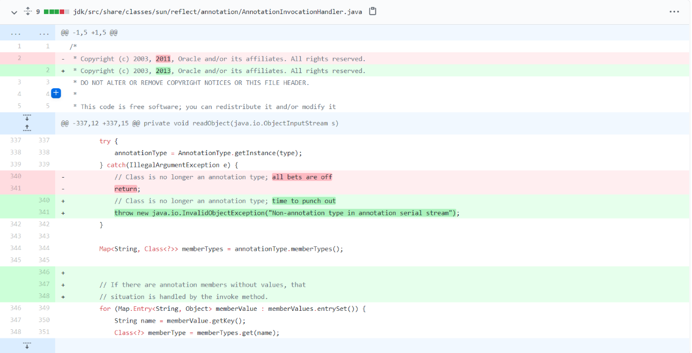
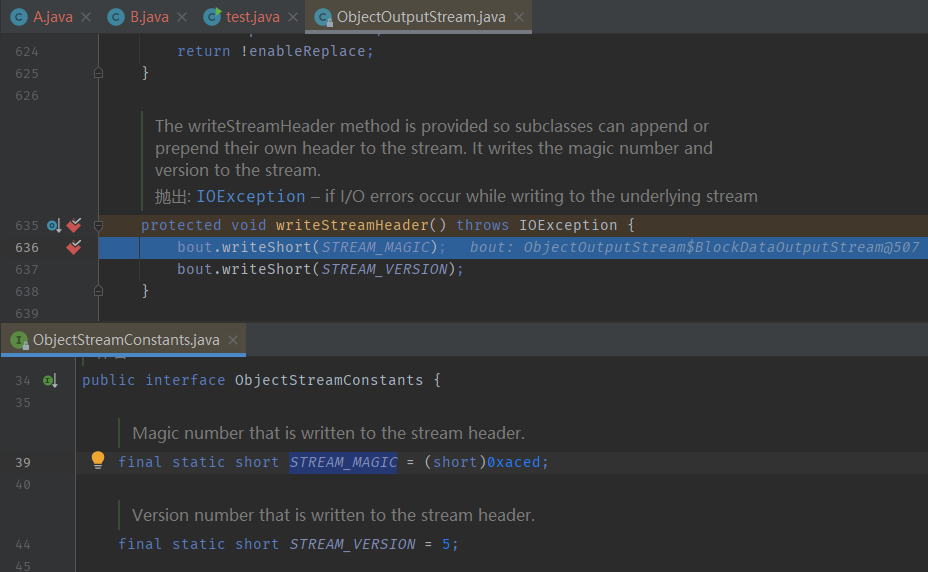
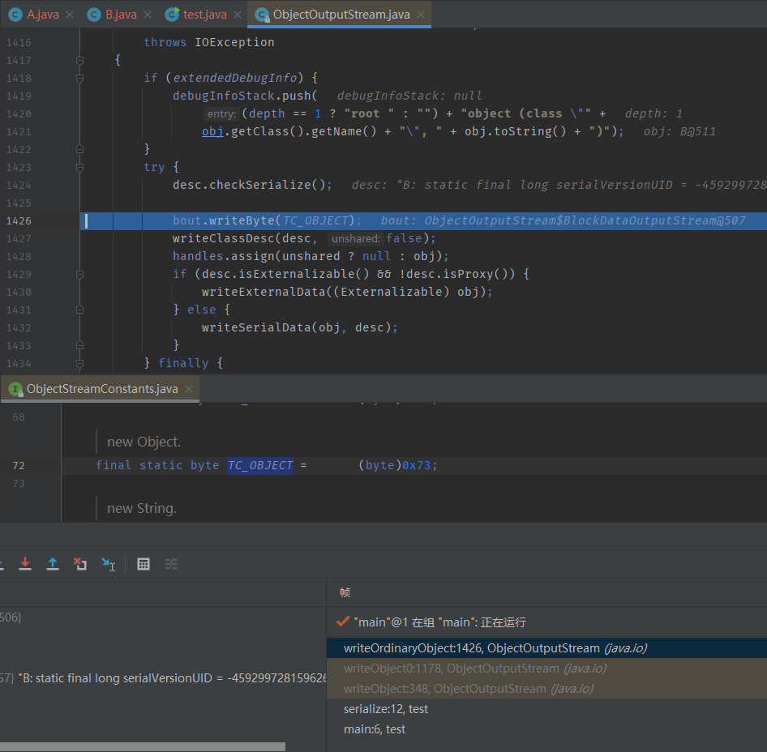
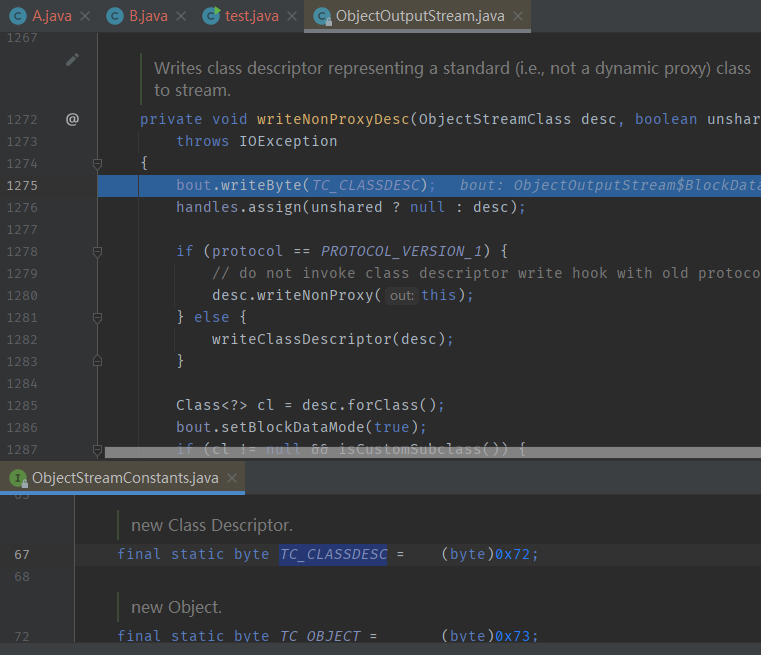

8u20链浅析
目录
在7u21链中，我提到过它的修复方法是判断this.type是否为AnnotationType，不是则直接抛出异常。

8u20链就是对其的绕过。
java 反序列流生成机制
public class A{
public int Aage = 100;
protected String Aname = "String in A";
private boolean Aflag = true;
}
import java.io.Serializable;
public class B extends A implements Serializable {
public int age = 50;
protected String name = "String in B";
private boolean flag = false;
}
import java.io.*;
public class test {
public static void main(String[] args) throws Exception{
B b = new B();
serialize(b,"b.ser");
}
public static void serialize(Object object, String file) throws IOException {
File f = new File(file);
ObjectOutputStream out = new ObjectOutputStream(new FileOutputStream(f));
out.writeObject(object);
out.flush();
out.close();
}
}

上图是上面代码运行后得到的序列化流，我们通过调试来一窥序列化的过程。
标识符和流版本号
首先对以下代码进行跟进
ObjectOutputStream out = new ObjectOutputStream(new FileOutputStream(f));
跟进后会发现这里会向序列流中先写入两个常量STREAM_MAGIC（0xaced），STREAM_VERSION（5），可以理解为先写入一个标识符以及这个流的版本号

两个常量
随后向下跟进
out.writeObject(object)
此处又写入了一个常量TC_OBJECT（0x73）

跟进1427行的writeClassDesc后会来到 writeNonProxyDesc，又写入一个常量 TC_CLASSDESC（0x72）

类名与serialVersionUID
跟进1280行的writeNonProxy